Introducción
Los agentes son los personajes que pueden utilizar los jugadores en la partida, una vez se elige a uno no se puede cambiar de elección durante el resto de la partida.
Estan divididos en 4 clases diferenciadas. Duelistas, centinelas, iniciadores y controladores.
Duelistas
Suelen ser los personajes más populares y difíciles de dominar, su trabajo suele ser infiltrarse en la zona enemiga para conseguir acabar con alguno silenciosamente o aprovecharse de sus habilidades agresivas para poder entrar junto a su equipo a la zona enemiga.
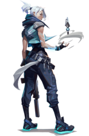 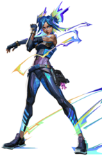 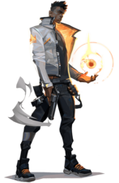 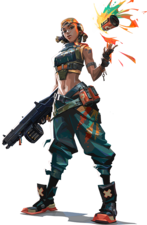 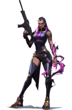 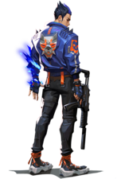Centinelas
Los centinelas son personajes defensivos, centrados en bloquear áreas, sobre todo en las rondas de defensa, ellos solos son capaces de controlar toda un área impidiendo el paso a los enemigos hasta que lleguen sus compañeros.
 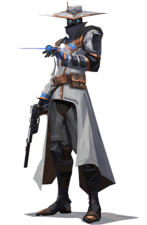
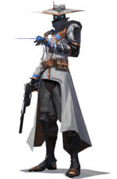


Iniciadores
Los iniciadores son los primeros en entrar a la batalla y sus habilidades se centran en facilitarles esa tarea: Aturdimientos, cegadoras y más habilidades similares para deshabilitar ciertas capacidades de los enemigos y hacer la entrada más sencilla.
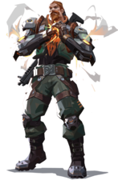 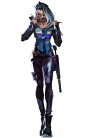 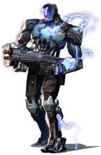 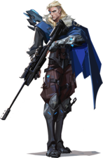
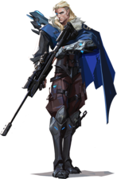
Controladores
Se encargan de dividir el terreno en varias zonas bloqueando la visión y despejando el camino para su equipo. Sus habilidades les permiten entre otras cosas colocar humos en forma de muros o esferas.
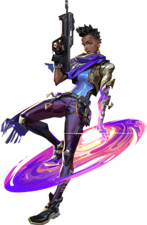 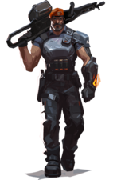 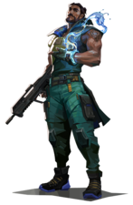 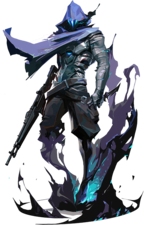 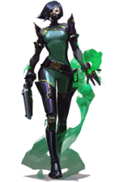| Imagen | Especificaciones |
|---|---|
AstraRol: Controlador Procedencia: República de Ghana Descripción: Usa sus poderes astrales para ganar el control de varias zonas del mapa pudiendo anticiparse a los movimientos de sus enemigos |
|
BreachRol: Iniciador Procedencia: Suecia Descripción: Es capaz de causar sismos y usar las paredes del mapa para lanzar sus habilidades antes de ser visto abriendose paso a la fuerza |
|
BrimstoneRol: Controlador Procedencia: Estados Unidos Descripción: Cuenta con un amplio arsenal que usa para proporcionar herramientas de utilidad a su equipo desde la distancia |
|
|
ChamberRol: Centinela Procedencia: Francia Descripción: Diseña sus propias armas, dandole la capacidad de acabar con sus enemigos mantenerles alejados de los lugares que tiene vigilados |
CypherRol: Centinela Procedencia: Marruecos Descripción: Un experto en información que usa sus habilidades para seguirle la pista a sus enemigos haciendoles caer en su red |
|
FadeRol: Iniciador Procedencia: Turquía Descripción: Una cazarrecompensas que usa el poder de las pesadillas para ahuyentar, localizar y dar caza a sus enemigos |
|
HarborRol: Controlador Procedencia: India Descripción: Usa un brazalete ancestral para controlar el agua, con la que puede escudar a sus aliados y bloquear el campo de visión de los enemigos |
|
JettRol: Duelista Procedencia: Corea del Sur Descripción: Es un personaje muy ágil que usa el viento para desplazarse a grandes velocidades y acabar con sus enemigos rapidamente |
|
KAY/ORol: Iniciador Procedencia: Indefinida/Línea temporal alternativa Descripción: Creado para neutralizar enemigos. Suprime las habilidades de los enemigos, incapacitándoles y dando la ventaja a su equipo |
|
|
KilljoyRol: Centinela Procedencia: Alemania Descripción: Brillante ingeniera que usa sus trampas para defender posiciones clave del mapa y castigar a los enemigos que no se retiren de su zona |
NeonRol: Duelista Procedencia: Filipinas Descripción: Genera grandes campos eléctricos que usa para moverse a gran velocidad y pillar a sus enemigos desprevenidos |
|
OmenRol: Controlador Procedencia: Desconocida Descripción: Un fantasma ancestral que usa las sombras para acechar a sus enemigos, sembrando el caos y la paranoia por todo el campo de batalla |
|
Phoenix (Fénix)Rol: Duelista Procedencia: Reino Unido Descripción: Usa sus poderes ígneos para prender fuego a todo el mapa, cegar a sus enemigos y volver a la vida desde las llamas |
|
RazeRol: Duelista Procedencia: Brasil Descripción: Usa sus explosivos para irrumpir a la fuerza en el terreno enemigo barriendo a los enemigos que no sean capaces de escapar a tiempo |
|
ReynaRol: Duelista Procedencia: México Descripción: Es capaz de dominar todos los combates absorbiendo el alma de los enemigos que derrota para recuperarse o volverse intocable |
|
|
SageRol: Centinela Procedencia: China Descripción: Usa el hielo para bloquear el paso de los enemigos. También es capaz de curar a sus aliados e incluso revivir a aquellos que han caído |
|
SkyeRol: Iniciador Procedencia: Australia Descripción: Su manada se ocupa de abrir huecos en la defensa enemiga y obstaculizar su avance mientras ella mantiene a sus aliados con vida |
SovaRol: Iniciador Procedencia: Rusia Descripción: Especialista en localizar y perseguir a sus enemigos con gran precisión usando su arco y dron capaces de geolocalizar enemigos |
|
ViperRol: Controlador Procedencia: Estados Unidos Descripción: Química experta que usa el veneno para cegar a sus adversarios y acabar con ellos desde la distancia gracias a sus múltiples dispositivos |
|
YoruRol: Duelista Procedencia: Japón Descripción: Crea grietas dimensionales para infiltrarse entre los enemigos sin ser visto y les engaña para acabar con ellos sin que sepan qué ha pasado |